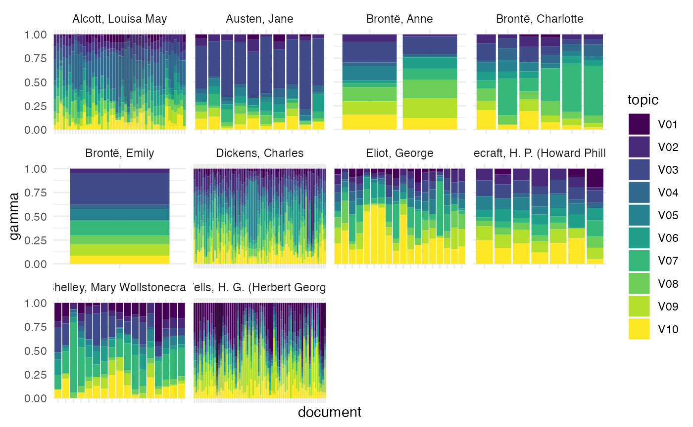

In this vignette, we analyze a corpus of works from the long nineteenth century, attempting to recover the author of each one.
## ── Attaching core tidyverse packages ──────────────────────── tidyverse 2.0.0 ──
## ✔ dplyr 1.1.2 ✔ readr 2.1.4
## ✔ forcats 1.0.0 ✔ stringr 1.5.0
## ✔ ggplot2 3.4.2 ✔ tibble 3.2.1
## ✔ lubridate 1.9.2 ✔ tidyr 1.3.0
## ✔ purrr 1.0.2
## ── Conflicts ────────────────────────────────────────── tidyverse_conflicts() ──
## ✖ dplyr::filter() masks stats::filter()
## ✖ dplyr::lag() masks stats::lag()
## ℹ Use the conflicted package (<http://conflicted.r-lib.org/>) to force all conflicts to become errors
theme_set(theme_minimal())
library(ggbeeswarm)
library(memoise)
library(tictoc)
library(gutenbergr) # text retrieval and manipulation
library(tidytext)
library(tmfast) # topic modeling##
## Attaching package: 'tmfast'
##
## The following object is masked from 'package:stats':
##
## loadings## stm v1.3.6.1 successfully loaded. See ?stm for help.
## Papers, resources, and other materials at structuraltopicmodel.com
get_author = function(author_id) {
gutenberg_works(gutenberg_author_id == author_id,
has_text) |>
gutenberg_download(meta_fields = c('author', 'title'),
mirror = 'http://aleph.gutenberg.org')
}
get_author = memoise(get_author,
cache = cache_filesystem('realbooks'))Corpus assembly
We first retrieve all works in Project Gutenberg by our target
authors: Jane Austen, Charlotte and Emily Brontë, Louisa May Alcott,
George Eliot, Charles Dickens, and HG Wells. We use the
memoise package with the helper function
get_author() to cache these results; the cache ends up at
about 286 MB.
## Jane Austen is author 68
gutenberg_authors |>
filter(str_detect(author, 'Austen'))## # A tibble: 7 × 7
## gutenberg_author_id author alias birthdate deathdate wikipedia aliases
## <int> <chr> <chr> <int> <int> <chr> <chr>
## 1 68 Austen, Jane NA 1775 1817 https://… NA
## 2 7603 Austen-Leigh,… NA 1798 1874 NA NA
## 3 25392 Austen-Leigh,… NA NA NA NA NA
## 4 25393 Austen-Leigh,… Aust… 1872 1961 NA Austen…
## 5 36446 Austen, Sidney NA NA NA NA NA
## 6 40288 Layard, Auste… NA 1817 1894 NA Layard…
## 7 47662 Hubback, Mrs.… NA 1818 1877 NA Hubbac…
austen_df = get_author(68)
## Anne Brontë is 404
filter(gutenberg_authors, str_detect(author, 'Brontë'))## # A tibble: 4 × 7
## gutenberg_author_id author alias birthdate deathdate wikipedia aliases
## <int> <chr> <chr> <int> <int> <chr> <chr>
## 1 404 Brontë, Anne NA 1820 1849 https://… Bronte…
## 2 405 Brontë, Emily NA 1818 1848 https://… Bronte…
## 3 408 Brontë, Charl… NA 1816 1855 https://… Bell, …
## 4 7125 Brontë, Patri… Bron… 1777 1861 NA Bronte…
a_bronte_df = get_author(404)
## Charlotte Brontë is 408
filter(gutenberg_authors, str_detect(author, 'Brontë'))## # A tibble: 4 × 7
## gutenberg_author_id author alias birthdate deathdate wikipedia aliases
## <int> <chr> <chr> <int> <int> <chr> <chr>
## 1 404 Brontë, Anne NA 1820 1849 https://… Bronte…
## 2 405 Brontë, Emily NA 1818 1848 https://… Bronte…
## 3 408 Brontë, Charl… NA 1816 1855 https://… Bell, …
## 4 7125 Brontë, Patri… Bron… 1777 1861 NA Bronte…
c_bronte_df = get_author(408)
## Emily Brontë is 405
filter(gutenberg_authors, str_detect(author, 'Brontë'))## # A tibble: 4 × 7
## gutenberg_author_id author alias birthdate deathdate wikipedia aliases
## <int> <chr> <chr> <int> <int> <chr> <chr>
## 1 404 Brontë, Anne NA 1820 1849 https://… Bronte…
## 2 405 Brontë, Emily NA 1818 1848 https://… Bronte…
## 3 408 Brontë, Charl… NA 1816 1855 https://… Bell, …
## 4 7125 Brontë, Patri… Bron… 1777 1861 NA Bronte…
e_bronte_df = get_author(405)
## Louisa May Alcott is 102
filter(gutenberg_authors, str_detect(author, 'Alcott'))## # A tibble: 4 × 7
## gutenberg_author_id author alias birthdate deathdate wikipedia aliases
## <int> <chr> <chr> <int> <int> <chr> <chr>
## 1 102 Alcott, Louis… NA 1832 1888 https://… Barnar…
## 2 2959 Alcott, Willi… Alco… 1798 1859 https://… Alcott…
## 3 38495 Alcott, Amos … NA 1799 1888 https://… Alcott…
## 4 42641 Pratt, Anna B… NA 1831 1893 NA NA
alcott_df = get_author(102)
## George Eliot is 90
filter(gutenberg_authors, str_detect(author, 'Eliot'))## # A tibble: 12 × 7
## gutenberg_author_id author alias birthdate deathdate wikipedia aliases
## <int> <chr> <chr> <int> <int> <chr> <chr>
## 1 90 Eliot, George NA 1819 1880 https://… Evans,…
## 2 178 Gregory, Eli… NA 1854 1915 NA NA
## 3 599 Eliot, T. S.… Elio… 1888 1965 https://… Eliot,…
## 4 3546 Eliot, Ethel… NA 1890 1972 NA NA
## 5 4887 Eliot, Charl… NA 1862 1931 https://… Eliot,…
## 6 6399 Eliot, Charl… NA 1834 1926 http://e… NA
## 7 8353 Stokes, Roy … NA NA NA NA NA
## 8 25235 Robinson, El… NA 1884 NA NA NA
## 9 33255 Trumbull, An… NA 1857 1949 NA NA
## 10 35592 Howard, Henr… NA 1873 1940 NA Howard…
## 11 39082 Swan, Mirand… NA NA NA NA NA
## 12 46750 McCormick, E… NA 1849 1891 NA NA
eliot_df = get_author(90)
## Mary Wollstonecraft Shelley is 61
filter(gutenberg_authors, str_detect(author, 'Shelley'))## # A tibble: 3 × 7
## gutenberg_author_id author alias birthdate deathdate wikipedia aliases
## <int> <chr> <chr> <int> <int> <chr> <chr>
## 1 61 Shelley, Mary… NA 1797 1851 https://… Shelle…
## 2 1529 Shelley, Perc… Shel… 1792 1822 https://… Shelle…
## 3 2162 Shelley, Henr… NA NA NA NA Shelle…
shelley_df = get_author(61)
## Charles Dickens is 37
filter(gutenberg_authors, str_detect(author, 'Dickens'))## # A tibble: 4 × 7
## gutenberg_author_id author alias birthdate deathdate wikipedia aliases
## <int> <chr> <chr> <int> <int> <chr> <chr>
## 1 37 Dickens, Char… NA 1812 1870 https://… Boz/Di…
## 2 6323 Clark, Sereno… NA NA NA NA NA
## 3 31615 Dickens, Mamie Dick… 1838 1896 NA Dicken…
## 4 47706 Dickens, Mary… NA 1862 1948 NA NA
dickens_df = get_author(37)
## HG Wells is 30
filter(gutenberg_authors, str_detect(author, 'Wells'))## # A tibble: 30 × 7
## gutenberg_author_id author alias birthdate deathdate wikipedia aliases
## <int> <chr> <chr> <int> <int> <chr> <chr>
## 1 30 Wells, H. G.… Well… 1866 1946 https://… Wells,…
## 2 135 Brown, Willi… NA NA 1884 https://… Brown,…
## 3 1060 Wells, Carol… Houg… 1862 1942 https://… Hought…
## 4 3499 Wells, Phili… NA 1868 1929 NA Wells,…
## 5 4952 Wells, J. (J… Well… 1855 1929 https://… Wells,…
## 6 5122 Dall, Caroli… NA 1822 1912 https://… Healey…
## 7 5765 Wells-Barnet… NA 1862 1931 https://… Wells,…
## 8 6158 Hastings, We… Hast… 1879 1923 NA Hastin…
## 9 7102 Wells, Frede… NA 1874 1929 NA NA
## 10 32091 Reeder, Char… NA 1884 NA NA NA
## # ℹ 20 more rows
wells_df = get_author(30)
## HP Lovecraft is 34724
filter(gutenberg_authors, str_detect(author, 'Lovecraft'))## # A tibble: 1 × 7
## gutenberg_author_id author alias birthdate deathdate wikipedia aliases
## <int> <chr> <chr> <int> <int> <chr> <chr>
## 1 34724 Lovecraft, H.… NA 1890 1937 https://… Lovecr…
lovecraft_df = get_author(34724)We combine these results, and use
tidytext::unnest_tokens() to convert the result into a
long-format document-term matrix. We also construct a dataframe to link
titles to authors in the topic model output.
dataf = bind_rows(austen_df,
a_bronte_df,
c_bronte_df,
e_bronte_df,
alcott_df,
eliot_df,
shelley_df,
dickens_df,
wells_df,
lovecraft_df) |>
unnest_tokens(term, text, token = 'words') |>
count(gutenberg_id, author, title, term)
dataf## # A tibble: 1,812,904 × 5
## gutenberg_id author title term n
## <int> <chr> <chr> <chr> <int>
## 1 35 Wells, H. G. (Herbert George) The Time Machine _can_ 1
## 2 35 Wells, H. G. (Herbert George) The Time Machine _cancan_ 1
## 3 35 Wells, H. G. (Herbert George) The Time Machine _down_ 1
## 4 35 Wells, H. G. (Herbert George) The Time Machine _four_ 1
## 5 35 Wells, H. G. (Herbert George) The Time Machine _him_ 1
## 6 35 Wells, H. G. (Herbert George) The Time Machine _how_ 1
## 7 35 Wells, H. G. (Herbert George) The Time Machine _i_ 1
## 8 35 Wells, H. G. (Herbert George) The Time Machine _instantan… 1
## 9 35 Wells, H. G. (Herbert George) The Time Machine _minus_ 1
## 10 35 Wells, H. G. (Herbert George) The Time Machine _nil_ 1
## # ℹ 1,812,894 more rows
meta_df = distinct(dataf, author, title)The number of works by each author varies widely, as does the total token count.
## # A tibble: 10 × 2
## author n
## <chr> <int>
## 1 Alcott, Louisa May 45
## 2 Austen, Jane 10
## 3 Brontë, Anne 2
## 4 Brontë, Charlotte 6
## 5 Brontë, Emily 1
## 6 Dickens, Charles 77
## 7 Eliot, George 18
## 8 Lovecraft, H. P. (Howard Phillips) 7
## 9 Shelley, Mary Wollstonecraft 17
## 10 Wells, H. G. (Herbert George) 70
with(dataf, n_distinct(author, title))## [1] 253
dataf |>
group_by(author, title) |>
summarize(n = sum(n)) |>
summarize(min = min(n),
median = median(n),
max = max(n),
total = sum(n)) |>
arrange(desc(total))## `summarise()` has grouped output by 'author'. You can override using the
## `.groups` argument.## # A tibble: 10 × 5
## author min median max total
## <chr> <int> <dbl> <int> <int>
## 1 Dickens, Charles 1364 31226 360502 6785632
## 2 Wells, H. G. (Herbert George) 3958 64936. 470557 5224147
## 3 Alcott, Louisa May 2660 55483 194549 2977676
## 4 Eliot, George 1871 108236. 320413 2247001
## 5 Austen, Jane 23192 101879 784790 1652092
## 6 Shelley, Mary Wollstonecraft 12514 53643 183856 1434844
## 7 Brontë, Charlotte 1416 138921 219783 699938
## 8 Brontë, Anne 68716 119946. 171177 239893
## 9 Lovecraft, H. P. (Howard Phillips) 3654 12073 99008 160200
## 10 Brontë, Emily 117082 117082 117082 117082
dataf |>
group_by(author, title) |>
summarize(n = sum(n)) |>
ggplot(aes(author, n, color = author)) +
geom_boxplot() +
geom_beeswarm() +
scale_color_discrete(guide = 'none') +
coord_flip()## `summarise()` has grouped output by 'author'. You can override using the
## `.groups` argument.Vocabulary selection
In line with a common rule of thumb in topic modeling, we aim for a vocabulary of about 10 times as many terms as documents in the corpus.
vocab_size = n_distinct(dataf$author, dataf$title) * 10
vocab_size## [1] 2530tmfast provides two information-theoretic methods for
vocabulary selection. Both are based on the idea of a two-player
guessing game. I pick one of the documents from the corpus, then one of
the terms from the document. I tell you the term, and you have to guess
which document I picked. More informative terms have greater information
gain (calculated as the Kullback-Leibler divergence) relative to a
“baseline” distribution based purely on the process used to pick the
document. The difference between the two methods is in the
document-picking process. The ndH method assumes the
document was picked uniformly at random from the corpus, so that no
document is more likely to be picked than any other. The
ndR method assumes document probability is proportional to
the document length, so that shorter documents are less likely to be
picked. This method implies that terms that are distinctive of shorter
documents have high information gain, since they indicate “surprising”
short documents.
On either method, the most informative terms are often typographical
or OCR errors, since these only occur in a single document. To balance
this, we multiply the information gain (\(\Delta H\) for the uniform process, \(\Delta R\) for the length-weighted process)
by the log frequency of the term across the entire corpus (\(\log n\)). So ndH is shorthand
for \(\log(n) \Delta H\) while
ndR is shorthand for \(\log(n)
\Delta R\).
tic()
H_df = ndH(dataf, title, term, n)
R_df = ndR(dataf, title, term, n) |>
mutate(in_vocab = rank(desc(ndR)) <= vocab_size)
toc()## 16.786 sec elapsed
H_df## # A tibble: 116,449 × 5
## term H dH n ndH
## <chr> <dbl> <dbl> <int> <dbl>
## 1 kipps 0.125 7.86 1454 82.6
## 2 dombey 0.386 7.60 1618 81.0
## 3 boffin 0.108 7.87 1127 79.8
## 4 pecksniff 0.366 7.62 1320 79.0
## 5 gwendolen 0.239 7.74 1048 77.7
## 6 lydgate 0.0235 7.96 867 77.7
## 7 deronda 0.404 7.58 1155 77.1
## 8 nicholas 0.977 7.01 1931 76.5
## 9 tito 0.0835 7.90 811 76.3
## 10 squeers 0.253 7.73 895 75.8
## # ℹ 116,439 more rows
R_df## # A tibble: 116,449 × 5
## term n dR ndR in_vocab
## <chr> <int> <dbl> <dbl> <lgl>
## 1 kipps 1454 7.48 78.6 TRUE
## 2 hoopdriver 469 8.50 75.4 TRUE
## 3 scrooge 1007 7.54 75.3 TRUE
## 4 lewisham 575 8.03 73.6 TRUE
## 5 benham 689 7.56 71.3 TRUE
## 6 melville 243 8.97 71.1 TRUE
## 7 bealby 458 8.04 71.0 TRUE
## 8 veronica 659 7.52 70.4 TRUE
## 9 bert 556 7.71 70.3 TRUE
## 10 christie 1797 6.43 69.5 TRUE
## # ℹ 116,439 more rowsThe resulting term ranking of the two methods tend to be similar, but
ndR is preferable in the current case because of the
additional weight it gives to distinctive terms from shorter
documents.
inner_join(H_df, R_df, by = 'term') |>
ggplot(aes(ndH, ndR, color = in_vocab)) +
geom_point(aes(alpha = rank(desc(ndH)) <= vocab_size))## Warning: Using alpha for a discrete variable is not advised.
inner_join(H_df, R_df, by = 'term') |>
mutate(ndH_rank = rank(desc(ndH)),
ndR_rank = rank(desc(ndR))) |>
ggplot(aes(ndH_rank, ndR_rank, color = in_vocab)) +
geom_point(aes(alpha = ndH_rank <= vocab_size)) +
scale_x_log10() +
scale_y_log10()## Warning: Using alpha for a discrete variable is not advised.## [1] "kipps" "hoopdriver" "scrooge" "lewisham" "benham"
## [6] "melville" "bealby" "veronica" "bert" "christie"
## [11] "sylvia" "snitchey" "boldheart" "britling" "castruccio"
## [16] "bounderby" "lillian" "maggie" "marjorie" "craggs"
## [21] "n't" "kemp" "bab" "redwood" "harman"
## [26] "cavor" "chatteris" "brumley" "ammi" "heathcliff"
## [31] "tackleton" "gladys" "helwyze" "tetterby" "montgomery"
## [36] "lodore" "trafford" "treherne" "jill" "ludovico"
## [41] "tito" "lomi" "canaris" "trotty" "villiers"
## [46] "falkner" "doubledick" "amanda" "gradgrind" "linton"
dataf |>
filter(term %in% vocab) |>
group_by(author, title) |>
summarize(n = sum(n)) |>
ggplot(aes(author, n, color = author)) +
geom_boxplot() +
geom_beeswarm() +
scale_color_discrete(guide = 'none') +
coord_flip()## `summarise()` has grouped output by 'author'. You can override using the
## `.groups` argument.
Fit topic models
dtm = dataf |>
filter(term %in% vocab) |>
mutate(n = log1p(n))
n_authors = n_distinct(dataf$author)
tic()
fitted_tmf = tmfast(dtm, n = c(5,
n_authors,
n_authors + 5),
row = title, column = term, value = n)
toc()## 0.936 sec elapsed
screeplot(fitted_tmf, npcs = n_authors + 5)Topic exploration
Without renormalization, most of the works are spread across a few topics, and the topics don’t clearly correspond to authors.
tidy(fitted_tmf, n_authors, 'gamma') |>
left_join(meta_df, by = c('document' = 'title')) |>
ggplot(aes(document, gamma, fill = topic)) +
geom_col() +
facet_wrap(vars(author), scales = 'free_x') +
scale_x_discrete(guide = 'none') +
scale_fill_viridis_d()
To renormalize, we need to choose a theoretical Dirichlet distribution.
alpha = peak_alpha(n_authors, 1, peak = .8, scale = 10)
target_entropy = expected_entropy(alpha)
target_entropy## [1] 0.997604
exponent = tidy(fitted_tmf, n_authors, 'gamma') |>
target_power(document, gamma, target_entropy)
exponent## [1] 4.064884
tidy(fitted_tmf, n_authors, 'gamma', exponent = exponent) |>
left_join(meta_df, by = c('document' = 'title')) |>
ggplot(aes(document, gamma, fill = topic)) +
geom_col() +
facet_wrap(vars(author), scales = 'free_x') +
scale_x_discrete(guide = 'none') +
scale_fill_viridis_d()
tidy(fitted_tmf, n_authors, 'gamma', exponent = exponent) |>
left_join(meta_df, by = c('document' = 'title')) |>
ggplot(aes(document, topic, fill = gamma)) +
geom_raster() +
facet_grid(cols = vars(author),
scales = 'free_x',
switch = 'x') +
scale_x_discrete(guide = 'none')After renormalization, there are distinctive topics for Alcott (4) and Wells (1 and 9). Austen, Anne Brontë, Emily Brontë, and some of Shelley’s works appear together in topic 3. Charlotte Brontë and some of Eliot’s and Shelley’s works split topic 5. Eliot and Lovecraft share topic 10. And Dickens’ works are spread across multiple topics, with 2, 6, and 8 appearing to be distinctive to him.
To aid interpretation, we create a crosswalk dataframe connecting topics to authors.
topic_author = tribble(
~ topic, ~ authors,
'V01', 'Wells',
'V02', 'Dickens',
'V03', 'Austin, A & E Brontë',
'V04', 'Alcott',
'V05', 'Dickens',
'V06', 'Dickens',
'V07', 'C Brontë, Eliot, Shelley',
'V08', 'Dickens',
'V09', 'Wells',
'V10', 'Eliot, Lovecraft'
)To explore these topics further, we turn to the word-topic distribution. These distributions could be renormalized, as with the topic-doc distributions. But the exponent for the word-topic distributions is usually quite close to 1, meaning renormalization doesn’t change these distributions very much.
target_entropy_term = expected_entropy(.1, k = vocab_size)
target_entropy_term## [1] 8.597192
exponent_term = tidy(fitted_tmf, n_authors, 'beta') |>
target_power(topic, beta, target_entropy_term)
exponent_term## [1] 1.066448We therefore skip renormalization and move directly to a Silge plot,
showing the top 10 terms for each topic.
tidytext::reorder_within() and
tidytext::scale_x_reordered() are useful for constructing
this plot.
beta_df = tidy(fitted_tmf, n_authors, 'beta')
top_terms = beta_df |>
group_by(topic) |>
arrange(topic, desc(beta)) |>
top_n(15, beta) |>
left_join(topic_author, by = 'topic')
top_terms## # A tibble: 150 × 4
## # Groups: topic [10]
## token topic beta authors
## <chr> <chr> <dbl> <chr>
## 1 empire V01 0.0162 Wells
## 2 britain V01 0.0124 Wells
## 3 peoples V01 0.0122 Wells
## 4 russia V01 0.0117 Wells
## 5 king V01 0.0111 Wells
## 6 asia V01 0.0104 Wells
## 7 socialism V01 0.00995 Wells
## 8 section V01 0.00971 Wells
## 9 egypt V01 0.00926 Wells
## 10 ii V01 0.00892 Wells
## # ℹ 140 more rows
top_terms |>
mutate(token = reorder_within(token,
by = beta,
within = topic)) |>
ggplot(aes(token, beta)) +
geom_point() +
geom_segment(aes(xend = token), yend = 0) +
facet_wrap(vars(topic, authors), scales = 'free_y') +
coord_flip() +
scale_x_reordered()Most topics (2, 3, 4, 5, 6, 8, 9) focus on character names, with three of the four Dickens topics corresponding to The Pickwick Papers (topic 2), Oliver Twist (5), and David Copperfield (8). Wells’ topics appear to distinguish non-fiction essays (topic 1) from fiction (9). Topic 7 groups together Charlotte Brontë, Eliot, and Shelley based on the use of French. Topic 10 has a mix of character names with months of the year; it appears to be a “miscellaneous” topic, often created by topic models to accommodate documents that don’t fit elsewhere.